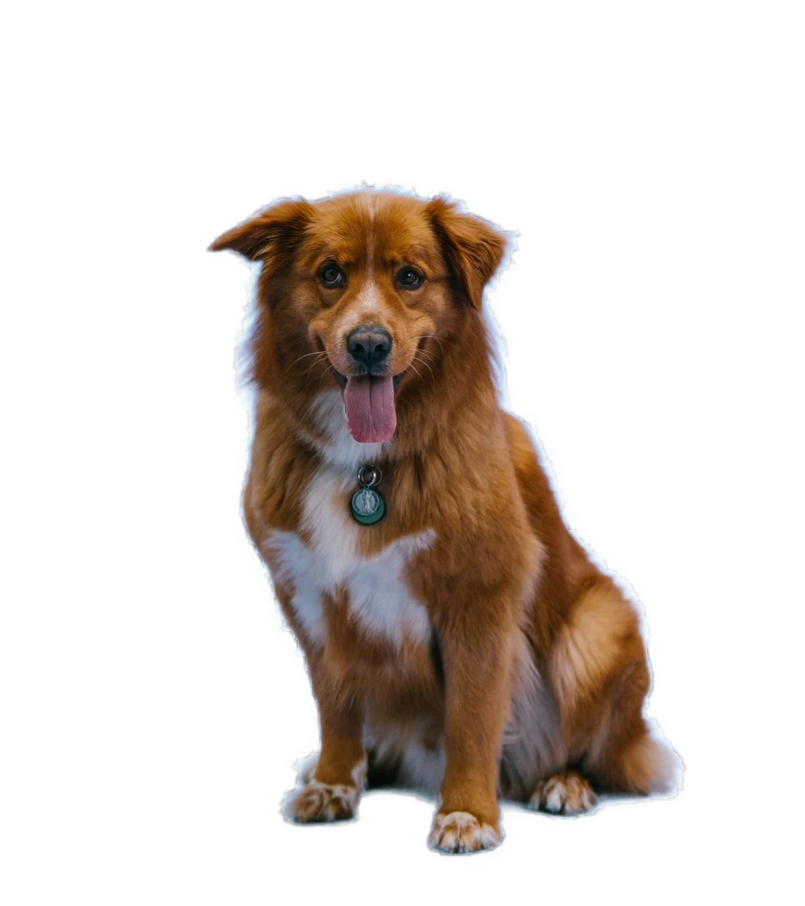
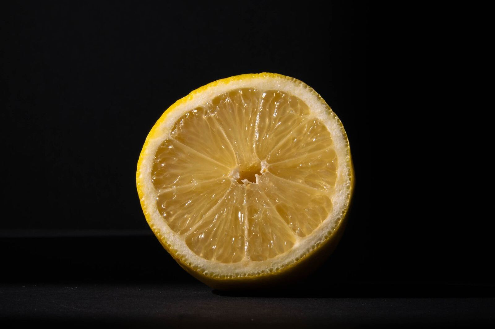
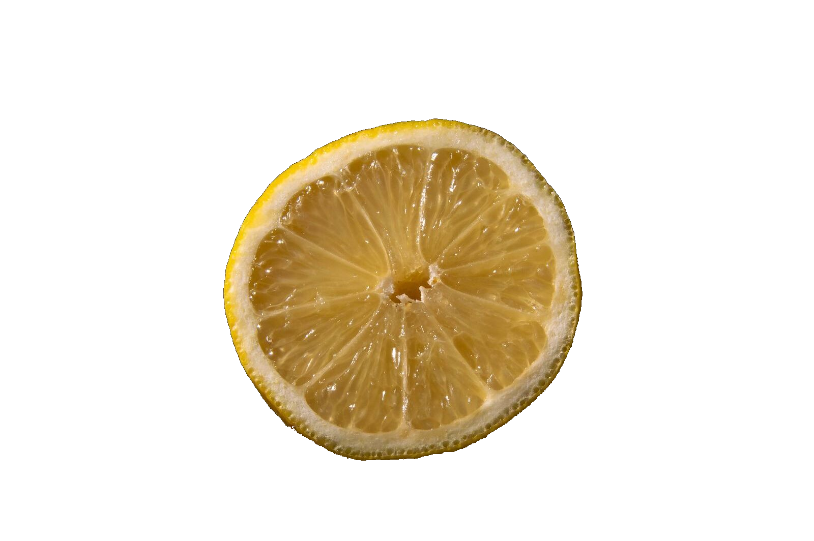

Web optimizer
Fit, convert, strip metadata, and compress a whole folder for the web.
PRIVATE IMAGE WORK / BROWSER-LOCAL
Compress image, resize a folder, convert HEIC to JPG, or turn images to PDF in one local batch recipe. Inspect every step, see the bytes and dimensions, and export without uploading your files.
IMAGE BYTES STAY LOCAL · NO PROCESSING CREDITS · NO WATERMARK · LIMITS SHOWN BEFORE PROCESSING

BACKGROUND REMOVAL
Drag the split or use the arrow keys. Both sides are the same 1,600 × 1,064 pixels: the photograph on one side, the transparent cutout on the other.


Background removal preserves the subject with refined alpha · same 1,600 × 1,064 source pixels, measured from the shipped files
The same photograph also compresses from 94,873 → 56,284 bytes · same 1,600 × 1,064 pixels · 40.7% smaller. The hard-to-see difference is the point.
WORKFLOWS
Choose a workflow for web images, product photos, social formats, target-size compression, responsive image sets, watermark batches, or local sharing. Edit every step when you need control.
Fit, convert, strip metadata, and compress a whole folder for the web.
Make a consistent product batch without uploading originals or paying per image.
Generate square, portrait, and story-ready outputs from each source.
See GPS and camera metadata, strip it explicitly, then review privacy boxes before blur export.
Reorder pages, choose A4 or Letter, fit or fill, set margins, and export one compact local PDF or one per image.
Editable platform starting points plus dimensions-only ID print sheets. Published guidance changes; PixelProof does not promise acceptance.
LOCAL PROCESSING
Private. Image bytes stay in your browser. The app downloads its own code and background-removal models; checkout and licence validation carry no image data.
Practical. Limits are stated before processing, folders stay organized, and ZIP is always available.
Honest. JPEG, PNG, WebP, AVIF, HEIC/HEIF, BMP, static GIF, ICO, and SVG input are supported. Animated inputs warn and use only the first frame.
Bounded. No JPEG XL, RAW/DNG, animated conversion, GIF-to-MP4, raster-to-vector, PDF-to-image, automatic face detection, automatic background removal, or AI upscale.
PLANS
| Capability | PixelProof | Typical online editor | Desktop editor |
|---|---|---|---|
| Image bytes leave the device | No | Usually yes | No |
| Pricing model | Free or lifetime | Subscription / credits | Purchase or subscription |
| Offline after first load | Core jobs | Usually no | Yes |
| Batch ceiling shown before work | Yes | Plan-dependent | Usually yes |
| Target byte-size compression | Per image | Often absent | Usually manual |
| Metadata inspection and stripping | Visible | Often hidden | Usually available |
| Exportable local pipelines | Included | Rare | Usually manual |
| Background removal | Prompted, paid tiers | Often automatic | Usually available |
| Format breadth | Focused browser set | Service-dependent | Often broader |
| Team collaboration | Not included | Often included | Usually separate |
PRICING
Prices shown are current working values.
FREE
Core workbench access in the browser.
LIFETIME SOLO
For one person processing images locally.
LIFETIME STUDIO
For a small team processing client images.
OFFLINE OPERATION
After the app shell is cached, run a normal JPEG, HEIC, or images-to-PDF job with your network disabled. Your image bytes stay in the browser. First-use background-removal models, checkout, licence validation, and updates need a connection.
FAQ
Image bytes stay in your browser. PixelProof has no image upload endpoint. The app downloads its own code and, on first background-removal use, model files. Checkout and licence validation carry no image data.
Completed outputs are kept for up to 24 hours for recovery. Settings, recipes, profiles, presets, licence state, and optional model files remain until you clear them. The workbench shows sizes and provides clear buttons.
A task means one submitted job. A recipe counts once even when it creates multiple output files. Free includes 10 jobs per day and batches up to 5 input files.
Yes. Open the workbench's How it works panel for a self-test and local-data inventory. You can also load the app, turn off your network, and process a normal JPEG, HEIC, or PDF job after the shell is cached. First-use background-removal models, checkout, licence validation, and updates need a connection.
A recipe is an editable sequence of existing tools for a complete job, such as making a folder web-ready or generating a social pack. You can inspect each operation, change it, save it, and export it for a teammate.
Yes. Image to PDF accepts multiple images, supports drag reordering, A4, Letter or matching image size, orientation, margins, fit/fill, and one combined PDF or one PDF per image. Inputs are re-encoded locally to keep output sizes practical.
JPEG, PNG, WebP, AVIF output, HEIC/HEIF, BMP, static GIF, ICO, and SVG input. Animated GIF, APNG, and WebP are detected before processing and only their first frame is used. AVIF input, JPEG XL, RAW/DNG, animated conversion, GIF-to-MP4, raster-to-vector, and PDF-to-image are not shipped.
No. They are editable starting points based on published guidance, with a source URL and checked date. Platform requirements change and PixelProof does not claim approval or compliance.
No claim is made. The ID print-sheet tool handles physical dimensions and paper layout only. It does not check face position, expression, lighting, background, editing rules, eligibility, or application acceptance.
No image-processing credits and no surprise watermark. Free limits are stated before processing, and lifetime plans have their batch ceilings shown up front.
Yes. Target-size compression searches quality separately for every image. If the byte budget is impossible at the current dimensions, PixelProof says so and can optionally reduce dimensions.
The Metadata tool shows readable EXIF fields, including camera, timestamps, software, and GPS presence. You can strip all metadata or keep copyright and orientation when exporting JPEG.
Yes. Relative paths remain visible in results and are preserved in ZIP exports or in a folder you choose in supported Chromium browsers. ZIP is the portable fallback on Safari and Firefox.
Yes. Focus the workbench and press Ctrl+V or ⌘V with an image on the clipboard. Text-only paste is left alone.
No. It is click-to-select, with keyboard coordinates available for positioning the selection point. You choose the subject, and the browser refines that selection into continuous alpha. It is not automatic face detection.
WORKBENCH